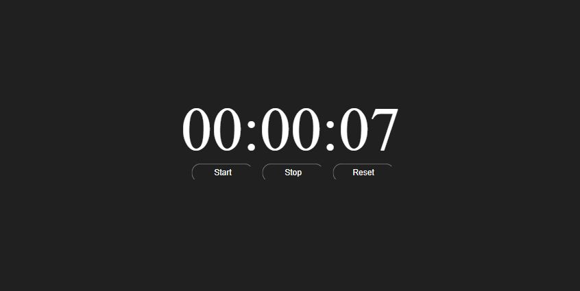

Hours, Minutes, Seconds
This small project was written only using funcations and variables, making it very good practice. The stopwatch works by using the setTimeout() method to set a timer once the startTimer() buttons is pressed.

Some difficulties that I encountered were trying to fix the hanging zero that would occur if my integer variables were less than ten. I solved this using some simple logic and parsing in a string '0'
Very little html had to be used but I spent some extra time making the css look extra clean and organized.